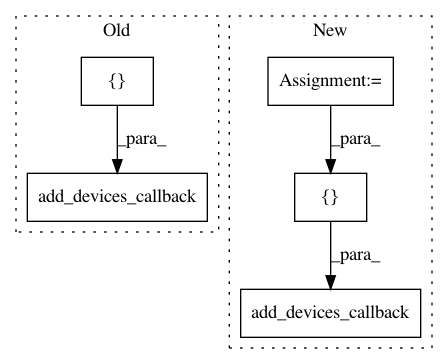

71546035678c357360d4da96cacd6b3005e59719,homeassistant/components/switch/pulseaudio_loopback.py,,setup_platform,#Any#Any#Any#Any#,28
Before Change
_LOGGER.error("Missing required variable: source_name")
return False
add_devices_callback([PALoopbackSwitch(
hass,
convert(config.get("name"), str, DEFAULT_NAME),
convert(config.get("host"), str, DEFAULT_HOST),
convert(config.get("port"), int, DEFAULT_PORT),
convert(config.get("buffer_size"), int, DEFAULT_BUFFER_SIZE),
convert(config.get("tcp_timeout"), int, DEFAULT_TCP_TIMEOUT),
config.get("sink_name"),
config.get("source_name")
)])
// pylint: disable=too-many-arguments, too-many-instance-attributes
class PALoopbackSwitch(SwitchDevice):
After Change
host = convert(config.get("host"), str, DEFAULT_HOST)
port = convert(config.get("port"), int, DEFAULT_PORT)
buffer_size = convert(config.get("buffer_size"), int, DEFAULT_BUFFER_SIZE)
tcp_timeout = convert(config.get("tcp_timeout"), int, DEFAULT_TCP_TIMEOUT)
server_id = str.format("{0}:{1}", host, port)
if server_id in _PULSEAUDIO_SERVERS:
server = _PULSEAUDIO_SERVERS[server_id]
else:
server = PAServer(host, port, buffer_size, tcp_timeout)
_PULSEAUDIO_SERVERS[server_id] = server
add_devices_callback([PALoopbackSwitch(
hass,
name,
server,
sink_name,
source_name
)])
class PAServer():
Represents a pulseaudio server.
In pattern: SUPERPATTERN
Frequency: 3
Non-data size: 5
Instances
Project Name: home-assistant/home-assistant
Commit Name: 71546035678c357360d4da96cacd6b3005e59719
Time: 2016-04-26
Author: Cinntax@users.noreply.github.com
File Name: homeassistant/components/switch/pulseaudio_loopback.py
Class Name:
Method Name: setup_platform
Project Name: home-assistant/home-assistant
Commit Name: aec25c88b42d8471c084656504e0a5da287ce7a1
Time: 2015-07-10
Author: paulus@paulusschoutsen.nl
File Name: homeassistant/components/camera/generic.py
Class Name:
Method Name: setup_platform
Project Name: home-assistant/home-assistant
Commit Name: 18ca7b4f9e3d3186384a5b95a1ba0be7ea1d87a9
Time: 2015-11-29
Author: happyleaves.tfr@gmail.com
File Name: homeassistant/components/switch/orvibo.py
Class Name:
Method Name: setup_platform